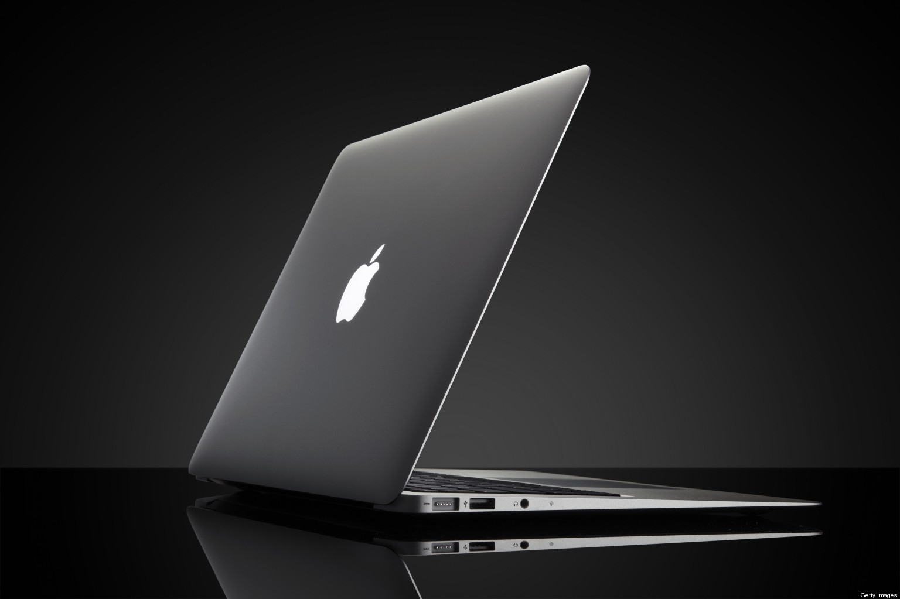

Apple

Dell

HP

Lenovo

Asus

Acer

MSI

Samsung

Huawei

Microsoft

Razer

LG

Toshiba

Sony


Usan macOS, un sistema operativo propio de Apple.
Es rápido, estable y tiene buena seguridad contra virus.
Utilizan chips diseñados por Apple como:
Estos procesadores consumen menos energía y ofrecen alto rendimiento.
Pantallas Retina Display con:
La batería puede durar entre 12 y 20 horas dependiendo del modelo.
Se conectan fácilmente con otros dispositivos como:
Permite compartir archivos y continuar tareas entre dispositivos.
Muy usadas para:
Las laptops Dell pueden usar procesadores como:
Estos procesadores permiten realizar tareas rápidas como estudiar, programar o editar videos.
Generalmente tienen 8 GB, 16 GB o más de RAM.
Permite usar varios programas al mismo tiempo sin que la laptop se vuelva lenta.
Usan discos SSD (256 GB, 512 GB o más).
Los SSD hacen que la computadora inicie más rápido y cargue programas en pocos segundos.
Pantallas de 14 a 16 pulgadas.
Resolución HD o Full HD (1920 × 1080) para mejor calidad de imagen.
La mayoría usa Windows 11 o Windows 10.
Incluyen varios puertos como:
Dell tiene diferentes series de laptops:
Las laptops HP pueden usar diferentes procesadores como:
Estos procesadores permiten trabajar rápido, usar programas y navegar en internet.
Normalmente tienen 4 GB, 8 GB o 16 GB de RAM.
Sirve para usar varios programas al mismo tiempo sin que la laptop se vuelva lenta.
Usan SSD de 256 GB o 512 GB o discos duros de 1 TB.
El almacenamiento guarda archivos, programas y el sistema operativo.
Pantallas entre 14 y 16 pulgadas.
Resolución HD o Full HD (1920 × 1080) para buena calidad de imagen.
La mayoría usa:
Incluyen puertos como:
HP tiene varias series para diferentes usos:
Las laptops de Lenovo son muy usadas por estudiantes, oficinas y empresas. Estas son sus principales características:
Las laptops Lenovo pueden usar diferentes procesadores como:
Estos procesadores permiten trabajar rápido, estudiar, programar o usar varias aplicaciones.
Normalmente tienen 4 GB, 8 GB o 16 GB de RAM.
Sirve para usar varios programas al mismo tiempo sin que la laptop se vuelva lenta.
Usan SSD de 256 GB o 512 GB o discos duros de 1 TB.
El almacenamiento guarda archivos, programas y el sistema operativo.
Pantallas entre 14 y 16 pulgadas.
Resolución HD o Full HD (1920 × 1080) para buena calidad de imagen.
La mayoría usa:
Incluyen puertos como:
Lenovo tiene varias series para diferentes usos:
Las laptops de Asus son muy conocidas por su buen rendimiento y diseño moderno. Estas son sus principales características:
Las laptops Asus pueden usar diferentes procesadores como:
Estos procesadores permiten trabajar rápido, jugar y usar programas pesados.
Normalmente tienen 8 GB o 16 GB de RAM.
Sirve para usar varios programas al mismo tiempo.
Usan SSD de 256 GB o 512 GB.
El almacenamiento permite guardar archivos y programas.
Pantallas entre 14 y 16 pulgadas.
Resolución Full HD (1920 × 1080) y en algunos modelos OLED de alta calidad.
La mayoría usa:
Incluyen puertos como:
Asus tiene varias series para diferentes usos:
Las laptops de Acer son muy usadas por estudiantes y personas que buscan computadoras a buen precio. Estas son sus principales características:
Las laptops Acer pueden usar diferentes procesadores como:
Estos procesadores permiten realizar tareas de estudio, trabajo y navegación en internet.
Normalmente tienen 4 GB, 8 GB o 16 GB de RAM.
Sirve para usar varios programas al mismo tiempo sin que la laptop se vuelva lenta.
Usan SSD de 256 GB o 512 GB o discos duros de 1 TB.
El almacenamiento guarda archivos, programas y el sistema operativo.
Pantallas entre 14 y 15.6 pulgadas.
Resolución HD o Full HD (1920 × 1080) para buena calidad de imagen.
La mayoría usa:
Incluyen puertos como:
Acer tiene varias series para diferentes usos:
Las laptops de MSI son muy conocidas en el mundo del gaming y alto rendimiento. Estas son sus principales características:
Las laptops MSI pueden usar diferentes procesadores como:
Estos procesadores permiten ejecutar juegos y programas muy exigentes.
Normalmente tienen 16 GB o 32 GB de RAM.
Sirve para ejecutar juegos y programas pesados sin problemas.
Usan SSD de 512 GB o 1 TB.
El almacenamiento permite guardar juegos, programas y archivos grandes.
Pantallas entre 15.6 y 17 pulgadas.
Resolución Full HD o QHD con alta tasa de refresco.
La mayoría usa:
Incluyen puertos como:
MSI tiene varias series para diferentes usos:
Las laptops de Samsung son conocidas por su diseño moderno y pantallas de alta calidad. Estas son sus principales características:
Las laptops Samsung pueden usar diferentes procesadores como:
Estos procesadores permiten trabajar rápido y usar programas de oficina o estudio.
Normalmente tienen 8 GB o 16 GB de RAM.
Sirve para usar varios programas al mismo tiempo.
Usan SSD de 256 GB o 512 GB.
El almacenamiento guarda archivos, programas y el sistema operativo.
Pantallas entre 13 y 15 pulgadas.
Resolución Full HD o AMOLED, que ofrece colores más vivos.
La mayoría usa:
Incluyen puertos como:
Samsung tiene varias series para diferentes usos:
Las laptops de Huawei son conocidas por su diseño elegante y por ser ligeras. Estas son sus principales características:
Las laptops Huawei pueden usar diferentes procesadores como:
Estos procesadores permiten trabajar rápido, estudiar y usar programas de oficina.
Normalmente tienen 8 GB o 16 GB de RAM.
Sirve para usar varios programas al mismo tiempo sin que la laptop se vuelva lenta.
Usan SSD de 256 GB o 512 GB.
El almacenamiento guarda archivos, programas y el sistema operativo.
Pantallas entre 14 y 16 pulgadas.
Resolución Full HD o 2K, con buena calidad de imagen.
La mayoría usa:
Incluyen puertos como:
Huawei tiene varias series para diferentes usos:
Las laptops de Microsoft son conocidas por su diseño moderno y buena integración con Windows. Estas son sus principales características:
Las laptops Microsoft pueden usar diferentes procesadores como:
Estos procesadores permiten trabajar rápido y usar programas de productividad.
Normalmente tienen 8 GB o 16 GB de RAM.
Sirve para usar varios programas al mismo tiempo.
Usan SSD de 256 GB, 512 GB o 1 TB.
El almacenamiento guarda archivos, programas y el sistema operativo.
Pantallas entre 13 y 15 pulgadas.
Resolución alta con tecnología PixelSense.
La mayoría usa:
Incluyen puertos como:
Microsoft tiene varias series para diferentes usos:
Las laptops de Razer son conocidas por su alto rendimiento y por ser usadas para videojuegos. Estas son sus principales características:
Las laptops Razer pueden usar diferentes procesadores como:
Estos procesadores permiten ejecutar juegos y programas muy exigentes.
Normalmente tienen 16 GB o 32 GB de RAM.
Sirve para ejecutar juegos y programas pesados sin problemas.
Usan SSD de 512 GB o 1 TB.
El almacenamiento permite guardar juegos, programas y archivos grandes.
Pantallas entre 15 y 17 pulgadas.
Resolución Full HD o 4K con alta tasa de refresco.
La mayoría usa:
Incluyen puertos como:
Razer tiene varias series para diferentes usos:
Las laptops de LG son conocidas por ser muy ligeras, delgadas y con buena duración de batería. Estas son sus principales características:
Las laptops LG pueden usar diferentes procesadores como:
Estos procesadores permiten trabajar rápido, estudiar y usar programas de oficina o diseño.
Normalmente tienen 8 GB, 16 GB o hasta 32 GB de RAM.
Sirve para usar varios programas al mismo tiempo sin que la laptop se vuelva lenta.
Usan SSD de 256 GB, 512 GB o 1 TB.
El almacenamiento guarda archivos, programas y el sistema operativo.
Pantallas entre 14 y 17 pulgadas.
Resolución Full HD, WQXGA o OLED con buena calidad de imagen y colores muy nítidos.
La mayoría usa:
Incluyen puertos como:
LG tiene varias series para diferentes usos:
Las laptops de Toshiba fueron muy conocidas por ser resistentes, confiables y buenas para uso de oficina y estudio. Estas son sus principales características:
Las laptops Toshiba pueden usar diferentes procesadores como:
Estos procesadores permiten trabajar, estudiar, navegar en internet y usar programas básicos o de oficina.
Normalmente tienen 4 GB, 8 GB o hasta 16 GB de RAM.
Sirve para usar varios programas al mismo tiempo sin que la computadora se vuelva lenta.
Pueden usar:
El almacenamiento sirve para guardar archivos, programas y el sistema operativo.
Pantallas entre 13 y 15.6 pulgadas.
Resolución HD o Full HD con tecnología LED para mostrar imágenes claras y buen brillo.
La mayoría usa:
Incluyen puertos como:
Esto permite conectar internet, dispositivos externos y accesorios.
Toshiba tenía varias series para diferentes usos:
Las laptops Sony, conocidas como la línea VAIO, son famosas por ser elegantes, ligeras y con buen rendimiento. Estas son sus principales características:
Las laptops Sony VAIO pueden usar diferentes procesadores como:
Estos procesadores permiten trabajar rápido, estudiar, usar programas de oficina, multimedia y algunas tareas de diseño.
Normalmente tienen 4 GB, 8 GB o 16 GB de RAM.
Sirve para usar varios programas al mismo tiempo sin que la laptop se vuelva lenta.
Usan SSD o HDD, con capacidades de:
El almacenamiento sirve para guardar archivos, programas y el sistema operativo.
Pantallas entre 13 y 15.6 pulgadas.
Resolución Full HD o HD con buena calidad de imagen y colores nítidos, ideal para ver videos y trabajar con gráficos.
La mayoría usa:
Incluyen puertos como:
Esto permite conectar dispositivos externos y acceder a internet inalámbrico.
Sony tuvo varias series para distintos usos:
Las laptops Chromebook son conocidas por ser ligeras, rápidas y enfocadas en la nube, ideales para estudiantes y trabajo en línea. Estas son sus principales características:
Las Chromebook pueden usar diferentes procesadores como:
Estos procesadores permiten navegar por internet, usar aplicaciones de oficina y ejecutar programas ligeros de forma eficiente.
Normalmente tienen:
La RAM permite usar varias aplicaciones web al mismo tiempo sin que el sistema se vuelva lento.
Las Chromebook suelen usar almacenamiento eMMC o SSD, con capacidades de:
El almacenamiento guarda archivos locales, aunque la mayoría del trabajo se hace en la nube con Google Drive.
Pantallas entre 11 y 15 pulgadas, algunas con:
Ofrecen buen brillo y colores adecuados para estudiar, navegar o ver videos.
Usan Chrome OS, un sistema basado en la nube de Google, que es rápido, seguro y fácil de usar.
Incluyen puertos y conexiones como:
Esto permite conectar dispositivos externos y acceder a internet de manera rápida.
Chromebook tiene varias series según uso: